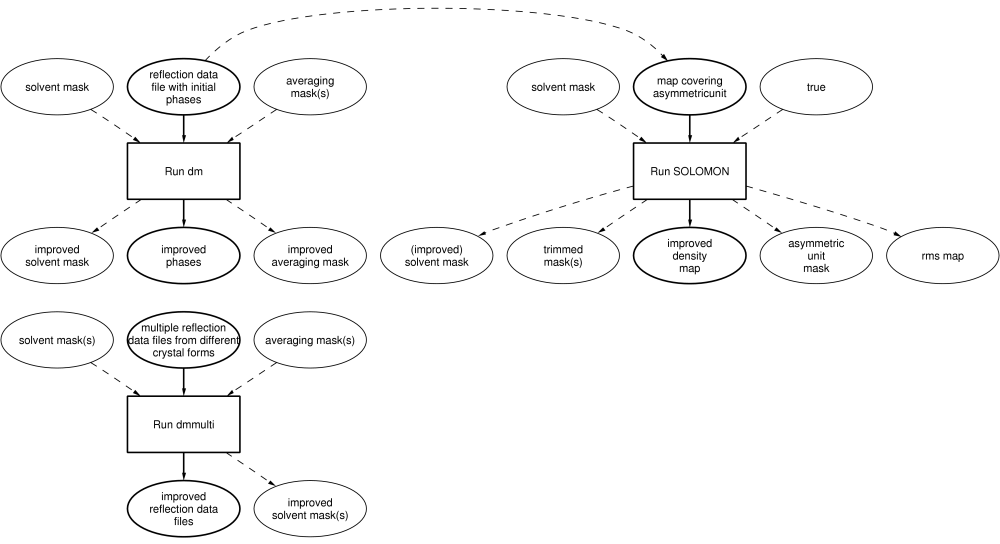

|
CCP4 Roadmaps |
| DENSITY IMPROVEMENT |
DENSITY MODIFICATION AND MOLECULAR AVERAGING
There are three different programs for density improvement. 'dm' reads reflection
data file with associated phases; SOLOMON reads a map. Both generate an improved map/phases.
'dmmulti' is only used when there are reflection data from multiple crystal forms,
and some initial phases are available.

Auxiliary CCP4 programs used in these tasks
- DM_NCS_AVERAGING
- 'dm' for NCS averaging (see 'dm')
- DM_SKELETONISATION
- Iterative skeletonisation using 'dm' (see 'dm')
- MAPROT
- Map skewing, interpolating, rotating, averaging and correlation masking
- MATTHEWS_COEF
- Cell content analysis (Matthews Coefficient and solvent content)
- MLPHARE
- Maximum likelihood heavy atom refinement and phase calculation
- NCSMASK
- Manipulate the averaging mask
- NCSREF
- NCS phased refinement; refining molecular replacement solutions when the structure contains NCS models
- SFALL
- Structure factor calculation and X-ray refinement using forward and reverse FFT
- SIGMAA
- Improve Fourier coefficients using calculated phases
Further reading
'dm' Workshop

CCP4i Documentation on Density Improvement
CCP4 Program Documentation